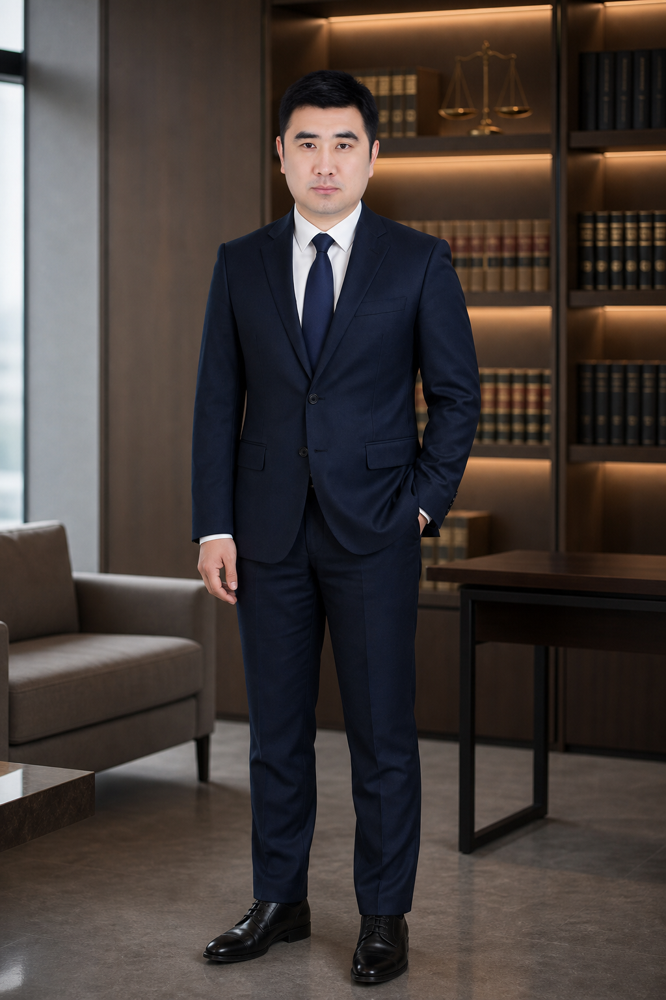
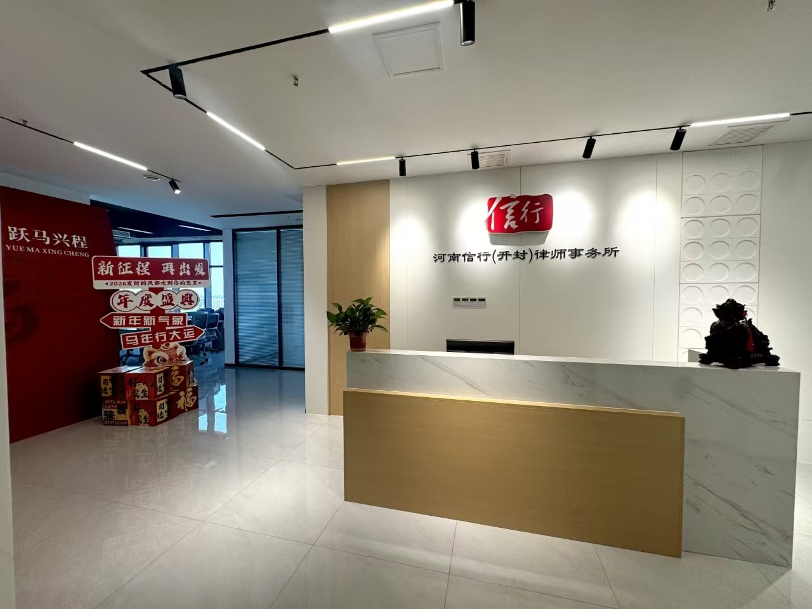

执行异议、复议、执监与执行异议之诉
围绕执行行为、执行标的、案外人权利及程序救济，统筹执行异议、复议、执行监督与执行异议之诉的处理路径。
WANG RENZHONG · LAWYER
专注执行事务与企业商事争议解决
从生效法律文书落地，到复杂财产线索与执行异议处理，为企业及个人客户提供清晰、稳健、可执行的法律方案。
专业判断 · 执行落地
法律服务不止于一纸裁判，更在于把权利转化为现实可获得的结果。
基于多年执行实务经验，围绕企业经营和个人权益，提前识别风险，精准选择路径。

关于律师 / ABOUT
王仁重律师，河南信行（开封）律师事务所合伙人、执行资产负责人，从事执行领域11年，长期专注于执行申请、恢复执行、执行异议、执行异议之诉、财产查控、查封解封及企业商事争议解决。
办案注重证据组织、程序节点与财产线索的协同推进，帮助客户在诉讼、保全和执行各阶段形成连续的行动方案。
专业领域 / SERVICES
根据案件所处阶段和核心目标，协助客户选择更合适的程序路径与行动顺序。
围绕执行行为、执行标的、案外人权利及程序救济，统筹执行异议、复议、执行监督与执行异议之诉的处理路径。
处理普通债权、优先债权、交叉执行、终本案件参与分配及分配方案异议等复杂问题，协助厘清清偿顺位与救济路径。
围绕查封、扣押、冻结、评估、拍卖、变卖、以物抵债及解封等环节，处理财产处置中的程序衔接与复杂疑难问题。
为企业提供经营风险、合同与债权管理、劳动用工等法律支持，并参与执行人工智能产品研发与执行知识体系建设。
专业壁垒 / RESEARCH
王仁重律师参与执行人工智能研发，围绕执行法律规范、司法解释、执行实务、裁判指引与典型案例，建设面向执行全流程的专业知识体系。
联合研发合作单位及项目名称，以正式授权和公开材料为准。专业经验 / SELECTED WORK
以下内容基于实际参与项目和办案经验整理，不披露当事人、案号及其他依法应予保密的信息。
围绕企业基本账户解封等执行实践问题，参与善意文明执行指导案例编写，为兼顾债权实现与企业正常经营提供实务参考。
全程代理当事人与法院沟通，处理涉及出口退税的执行难点。相关处理经验获河南高院及国家税务总局推广。
多次参与执行法院案款分配工作，对参与分配、清偿顺位、分配方案及相关异议处理积累了丰富实务经验。
处理多起被执行人作为法人的执行案件，围绕财务人员、关联人员责任，开展变更追加、执行异议审查等程序性工作。

所在律所 / THE FIRM
河南信行律师事务所成立于2007年8月，是经司法行政机关批准设立的综合型法律服务机构。河南信行（开封）律师事务所依托规范化管理、品牌化运营、团队化定位与专业化服务，为客户提供跨专业协作的法律解决方案。
据律所提供资料，服务领域覆盖公司金融资产、证券、医疗纠纷、交通事故侵权赔偿、工业地产、刑事、公司合规、争议解决、合同纠纷、政府依法行政、婚姻家事与家族财富管理、涉外法律事务等。
联系咨询 / CONTACT
从案件所处阶段、核心目标和现有材料开始沟通，以便更快判断可行的处理路径。